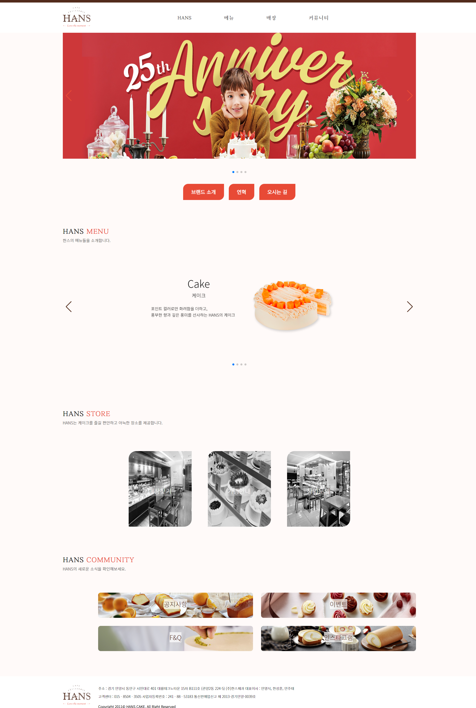
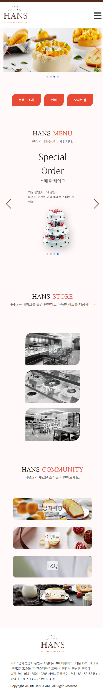

사이트 리뉴얼
"HANS 케이크" 사이트 리뉴얼 프로젝트입니다.
단순하고 직관적인 외관에 풍부하고 깊은 맛의 품격있는 반전을 가진 HANS의 케이크. 선물용으로 손색이 없는 구움과자와 디저트, 그리고 상황에 맞는 스페셜 케이크 주문또한 가능합니다. HANS는 특별한 날, 중요한 날을 더욱 더 빛내줄 제품을 제공합니다.
개인으로 진행된 프로젝트이며 html,css와 jquery를 이용해 사이트를 제작했습니다. 기존 사이트의 포인트 컬러인 주황색과 고동색을 그대로 사용해, 기존의 느낌을 살리는 방 향으로 진행했습니다. 또한, 버튼을 케이크의 생크림 모양을 연상시키는 도형으로 제작해, 사이트의 정체성을 더욱 높이고자 했습니다.
레이아웃 재구성과 시각적인 요소를 통한
사이트 정체성 부각
UI / UX 향상을 통한 사용자의 편의성 증진
스와이프로 슬라이드 배너를 넘길 수 있게 하는 등
세부적인
요소의 개선을 통한 편의성 증진